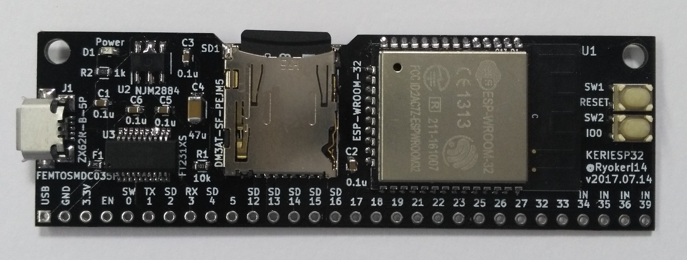
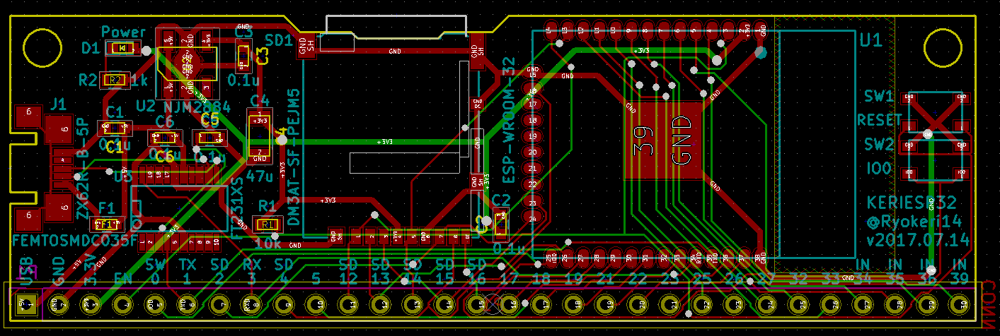
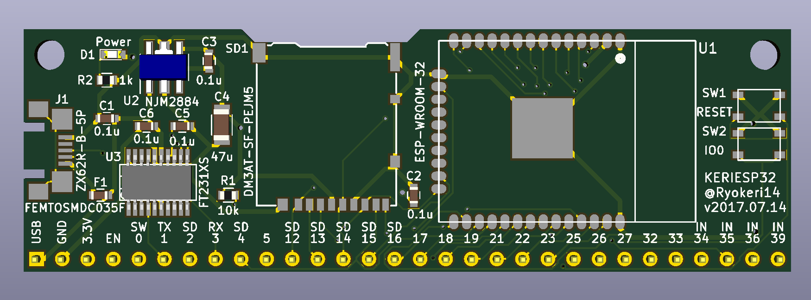
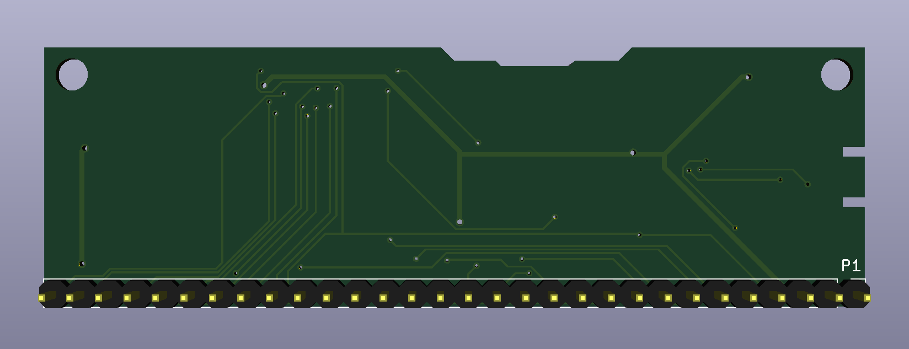

ESP-WROOM-32の短冊基板の紹介
Tweet
また作ったESP-WROOM-32の変換基板
以前にも
を作りましたが，今回は短冊形のものを作りました．
Micro-USBコネクタとシリアル変換ICが乗っているので，PCにつなぐだけですぐに使うことができます．
KERIESP32-Rectangle
I/Oピンが1列にならんだSIP型基板です．普通のピンヘッダをつけてもよし，L字ピンヘッダをつけてもよいでしょう．

今回の基板の特徴
小型の短冊基板
ESP32をを横向きにおいて基板をなるべく小さくしました．
部品の配置やこの形，結構気に入っています．
すべて秋葉原で手に入る部品たち
今回使っている部品はすべて秋月電子と千石電商で手に入るものでできています．なので，基板さえあればすぐに作ることができます．
ちなみに，USB-UART変換ICは秋月電子に売っているFT231Xを使用しています．
有名なICであるFT232RLよりも安価なのでこちらを使いました．
二つ並んだボタン
基板の右端には，リセットボタンとブート切替ボタンが並んでいます．
ボタン同士の距離が近くて押しづらいのではないかと思われるかもしれませんが，これには意味があります．
ESP32を開発する際，プログラムを修正しては書き込んでを繰り返します．その時，ブート切替ボタンを押しながらリセットボタンを押すのは結構大変です．
しかし，この位置にボタンが並んでいれば片手で一気に押すことができるのです．
回路図
{kind=link}
部品表
| リファレンス | 部品 | 型番 | 備考 |
|---|---|---|---|
| U1 | ESP32 | ESP-WROOM-32 | |
| U2 | レギュレータ | NJM2884U1-33 | SOT-89-5 |
| U3 | USB-UART変換IC | FT231X | |
| C1,2,3,5,6 | チップコンデンサ | 0.1uF・1608サイズ | パスコン |
| C4 | チップコンデンサ | 47uF・3216サイズ | 電源安定化用 |
| R1 | チップ抵抗 | 10kΩ・1608サイズ | ESP32のEnable |
| R2 | チップ抵抗 | 1kΩ・1608サイズ | 電源LED用 |
| F1 | ポリスイッチ | FEMTOSMDC035F-02 | |
| SW1,2 | タクトスイッチ | SKRPACE010 | リセット/ブートセレクト |
| D1 | 電源LED | 1608サイズ | |
| P1 | 細ピンヘッダ | 1x30 | |
| J1 | USB-Micro-Bメスコネクタ | ZX62R-B-5P | |
| SD1 | マイクロSDスロット | DM3AT-SF-PEJM5 |
配線パターン
例によってKiCadで作成しました．配線は自動配線です．



ESP32を使おう
最近ESP32を使いまくっているので，こんな基板があったらいいなという思いを詰め込んでこの基板を作りました．
いろいろな種類の基板をいっぱい作ってESP32の布教活動を地味に進めています．
みなさんも是非，ESP32を使ってみてください～
前の記事